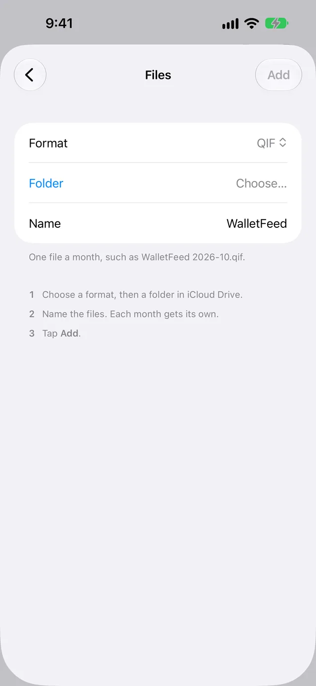

Save Apple Card transactions as QIF files
WalletFeed writes your Apple Card, Apple Cash and Savings transactions from your iPhone to QIF files in a folder that you select. There is one file for each month. You import each file into an app, for example GnuCash or Banktivity.
Before you start
You must have:
- An iPhone with iOS 26 or a newer version
- WalletFeed, with access to your Apple Card, Apple Cash or Savings account
- WalletFeed Pro (a subscription with a 1-week free trial, or a one-time Lifetime purchase)
- A folder in iCloud Drive, in On My iPhone or in a different app that the Files app shows, for example Dropbox
- An app that can import QIF files, for example GnuCash, Moneydance, Banktivity, Actual or YNAB.
WalletFeed is available only in the US.
If your app is on a computer, the computer must have access to the folder.
Step 1: Add a QIF file in WalletFeed
-
On your iPhone, open WalletFeed.
-
Tap Destinations.
-
Tap + at the top of the screen.

-
In the Destinations search field, type
QIF.
-
Tap QIF File.
If you do not have WalletFeed Pro, the WalletFeed Pro screen opens. After you get WalletFeed Pro, the Files screen opens.
-
If Format does not show QIF, select QIF in Format.

-
Tap Folder.
-
Select a folder, for example a folder in iCloud Drive.
Folder then shows the name of the folder.
-
To use a different name for the files, type the name in Name.
The name of each file contains this name, the month and
.qif, for exampleWalletFeed 2026-10.qif. -
Tap Add.
-
When WalletFeed shows Save Transactions to Files?, tap Save.
If you tap Cancel, WalletFeed removes the new destination.
WalletFeed then writes a QIF file for each month that has posted transactions. WalletFeed keeps no copy of the files.
Step 2: Import a QIF file into your app
A QIF file has no ID for each transaction. Thus, some apps can import a transaction two times. Actual compares the amount and the date of each transaction in the file with the transactions in the account. As a result, Actual does not import a transaction two times. But Actual can make one transaction from two different charges with the same amount.
-
Wait until the end of the month.
Each charge is in the file for the month of its date, but only after the charge posts. As a result, the file can change after the end of the month.
-
Open your app on the computer or iPhone that has access to the folder.
-
In your app, import the file for the month, for example
WalletFeed 2026-10.qif. -
If your app lets you select a date format, select month, day, year (
MM/DD/YYYY). -
If your app lets you select an account, select the account for the transactions in the file.
-
Do not import the file for that month again.
If you import the file for a month two times, your app can show each transaction two times.
Data in the QIF files
Each file contains the posted transactions of one month from the Wallet accounts for the destination. Each transaction has these fields:
| Field | Data |
|---|---|
Date (D) |
The date of the transaction in the sequence month, day, year (MM/DD/YYYY), for example 10/28/2026. |
Amount (T) |
The amount of the transaction. Purchases have a minus sign, for example -23.40. Payments and refunds have no minus sign. |
Cleared (C) |
Each transaction has *, because the file contains only posted transactions. |
Payee (P) |
The merchant name. If Wallet has no merchant name, the payee is the description. |
Memo (M) |
The description and the card statement text, if they are different from the payee. |
Category (L) |
The WalletFeed category, for example Groceries or Dining. A transaction in Other has no category. |
For a transaction in a different currency, the memo also contains the amount in that currency and the currency code. The file has no fields for the currency, the posted date, the merchant category code or a transaction ID.
A file with one Wallet account has one section. A file with more than one Wallet account has one section for each account. Each section starts with the name of the account.
In the file, your Apple Card is a credit card account (CCard). Your Apple Cash and Savings accounts are bank accounts (Bank).
Changes to the files
While WalletFeed is open, the files receive changes in seconds. When WalletFeed is not open, iOS starts WalletFeed approximately 1 hour or less after a change in Wallet. If Background Sync is on in Settings › Sync, WalletFeed then updates the files.
If WalletFeed cannot open the folder at that time, the files change when one of these occurs:
- You open WalletFeed.
- An automation starts.
- iOS starts WalletFeed while your iPhone is on a charger.
A pending charge is not in the file. When the charge posts, WalletFeed adds it to the file for the month of its date. WalletFeed does not put declined charges in the file. A refund is a different transaction. The amount of the refund has no minus sign.
When a transaction in a month changes, WalletFeed writes the file for that month again. Changes that you make to a file stay only until WalletFeed writes the file again. If Wallet removes a transaction from this month or from the month before this month, WalletFeed removes the transaction from the file. If your app has that transaction, the transaction stays in your app until you delete it.
Send previous transactions
A new QIF destination also receives previous transactions from the start date in Settings › Sync › Initial History. Initial History is All until you change it.
To write the files again for a period that you select, use Send History:
- In WalletFeed, tap Destinations.
- Tap WalletFeed, or the name that you typed in Name.
- Tap Send History.
- Tap 30 Days, 90 Days, 1 Year or All.
WalletFeed then writes the files of those months again. The start of the period also becomes the start date of the destination. Thus, the file for the first month of the period can contain only a part of that month.
Change or remove the destination
In WalletFeed, the destination has the name WalletFeed, or the name that you typed in Name. A change to Name on the screen of the destination does not change the names of the files.
Send only some transactions
- In Destinations, tap the destination.
- Set Filter to on.
- Set Include, Minimum, Accounts, Categories or Exclude.
WalletFeed uses the new filter for the files that it writes after the change. QIF files contain only posted transactions. Include Pending does not change this.
Get one file for each account
A file contains the transactions of all the Wallet accounts for its destination. To get a different file for each account, use one destination for each account:
- In WalletFeed, tap Destinations.
- Tap WalletFeed, or the name that you typed in Name.
- Set Filter to on.
- Tap Accounts.
- Tap the account for this destination.
- On your iPhone, open the Files app.
- In the folder, delete the QIF files of this destination, for example
WalletFeed 2026-10.qif. - In WalletFeed, on the screen of the destination, tap Send History.
- Tap All.
- For each account that you did not select in step 5, do Step 1 again with a different name in Name.
- For each new destination, do steps 1 to 9 of this list again.
Put the files in a different folder
-
In Destinations, tap the destination.
-
Tap Change Folder.
-
Select the new folder.
Then WalletFeed writes all the files again in the new folder.
Stop the changes to the files
- In Destinations, tap the destination.
- Set Enabled to off.
Remove the destination
-
In Destinations, tap the destination.
-
Tap Delete.
-
Tap Delete again.
The files stay in the folder.
If there is a problem
If your app shows each transaction two times
A QIF file has no transaction ID. Thus, your app cannot find the transactions that it imported the first time.
- In your app, delete the transactions that you imported the second time.
- Do not import the file for a month two times.
An OFX file has an ID for each transaction. GnuCash, Moneydance and Actual use this ID and do not import a transaction two times. If your app can import OFX files, you can use an OFX file.
If Actual shows "Failed parsing: doesn't look like a valid QIF file."
Actual cannot import a QIF file that has more than one Wallet account.
- Do the steps in Get one file for each account.
- In Actual, import each file into a different account.
If your app puts the transactions of all accounts into one account
Some apps, for example YNAB, put all the transactions of a file into one account.
- Do the steps in Get one file for each account.
- In your app, import each file into a different account.
If a charge is not in the file
A QIF file includes a charge only after the charge posts.
- Wait until the charge posts in Wallet.
- In WalletFeed, tap Settings (the gear button) at the top of the screen.
- Tap Sync Now.
- If the destination has a filter, make sure that the filter includes the charge (refer to Send only some transactions).
If the folder has no QIF file
WalletFeed writes a file only for a month that has posted transactions.
-
In WalletFeed, tap Destinations.
-
Tap the destination.
-
Tap Send Test.
The folder then gets
WalletFeed Test.qifwith a test transaction. If this file is in the folder, WalletFeed can write to the folder. -
Do not import
WalletFeed Test.qifinto your app. -
To write all your transactions to the files, tap Send History.
-
Tap All.
If the dates in your app are incorrect
The file uses US dates in the sequence month, day, year (MM/DD/YYYY).
- In your app, delete the transactions with the incorrect dates.
- Import the file again.
- If your app lets you select a date format, select month, day, year.
If WalletFeed shows "Couldn't open this folder."
WalletFeed cannot open the folder that you selected.
- Tap Folder, or Change Folder on the screen of the destination.
- Select a different folder.
If the destination shows "Can't open the folder. Choose it again."
WalletFeed does not have access to the folder of the destination at this time.
- In WalletFeed, tap Destinations.
- Tap the destination.
- Tap Change Folder.
- Select the folder of the destination again.
If you cannot tap Add
You can tap Add only after you select a folder.
- Tap Folder.
- Select a folder.
Related
Updated October 30, 2026